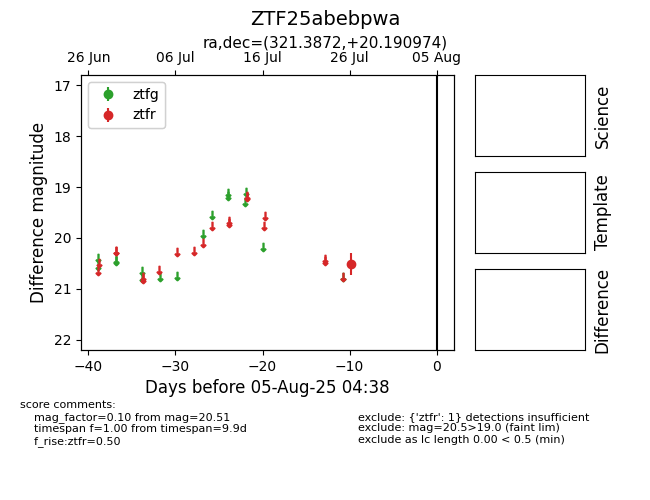

Target ZTF25abebpwa at 2025-08-05 04:38, see:
FINK: fink-portal.org/ZTF25abebpwa
Lasair: lasair-ztf.lsst.ac.uk/objects/ZTF25abebpwa
ALeRCE: alerce.online/object/ZTF25abebpwa
alt names
ZTF25abebpwa (ztf,fink)
coordinates:
equatorial (ra, dec) = (321.3872,+20.19097)
galactic (l, b) = (70.9372,-21.27947)
photometry
last ztfr=20.51
1 ztfr detections
